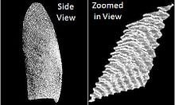
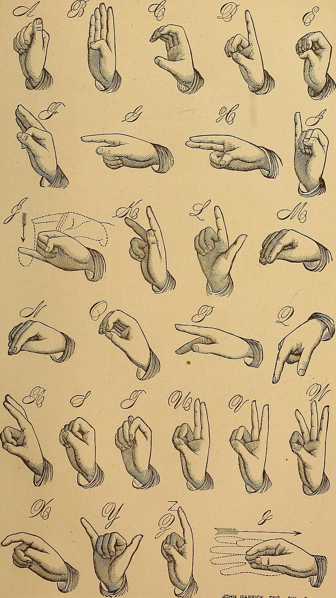
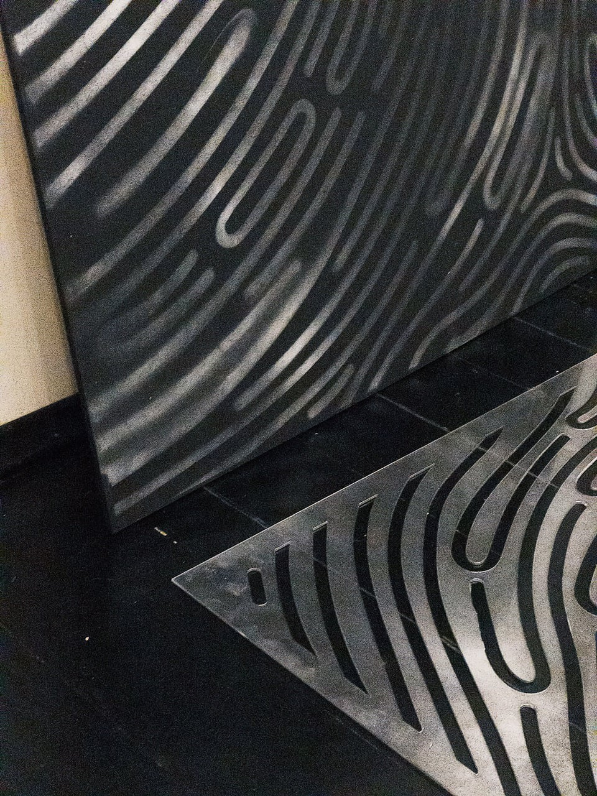
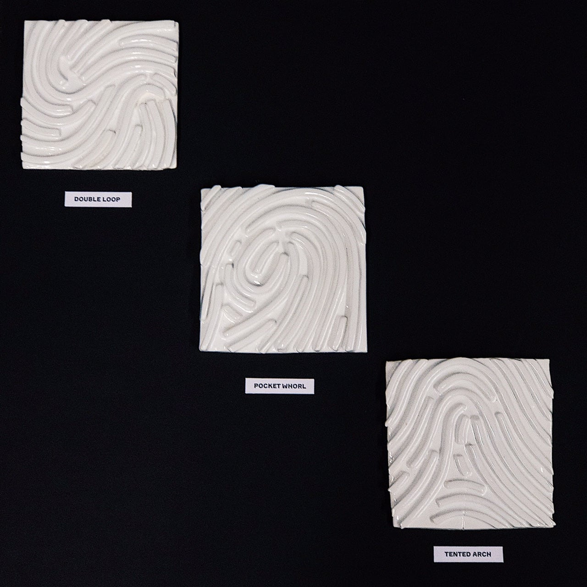
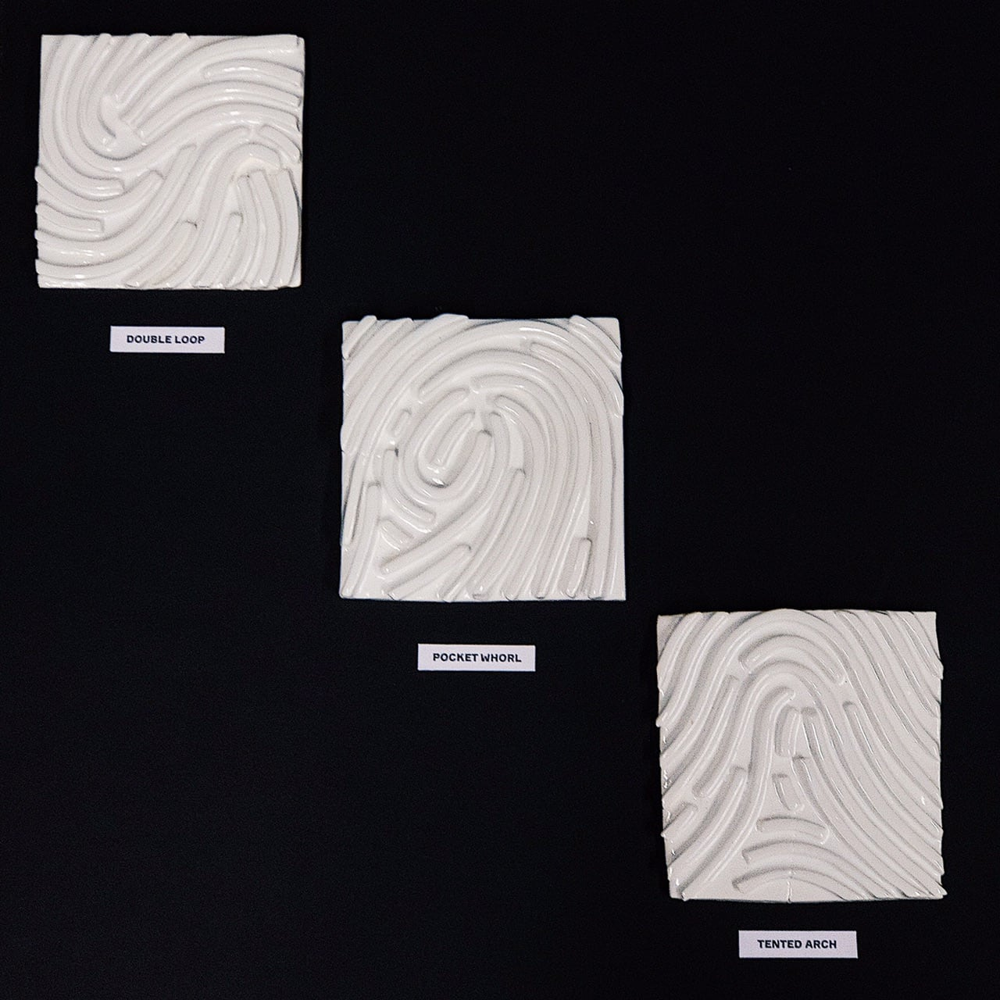

The Body Machine
2018
25th October
Today we started a new project, 'The Body Machine'. I was given a finger to research. Finger is not as intriguing as penis, or anus, or vagina, but finger can visit many places and witness many things.
Finger as an identifier. Fingerprints.
Finger as an eye in the world of tactility. It allows to recognise things with a touch without directly looking at them.
Finger as a gesture, silent language.
Finger as sex object. It can be put in any hole, it can lure and caress.
And also there are five different fingers.
Finger as an identifier. Fingerprints.
Finger as an eye in the world of tactility. It allows to recognise things with a touch without directly looking at them.
Finger as a gesture, silent language.
Finger as sex object. It can be put in any hole, it can lure and caress.
And also there are five different fingers.
00:25
Fingers also can imitate penis, if they are being painted by Shia.
12:20
30th October
Analysis of the finger anatomy gave me approximately nothing, except for the fact that I realised that fingerprint is the most visually rich part of the finger and can be an aspect to focus on and develop.
15:09
31st October
F I N G E R P R I N T S
1. Obtain fingerprints of my classmates (ask them to scan their fingers)
2. Print in a large scale
3. Linocut fingerprint patterns
4. Make an attempt to split these patterns on parts based on the dactyloscopy manuals
5. Scan and transfer to bitmap
6. Produce a pattern for screen-printing from fingerprint pieces, different variations
Apart from that:
1. Burrs and wounds on fingers. Fingers are the most common victim of compulsive disorder bat habits. What kind of habits are related to fingers?
2. One day of a finger: index, thumb, middle. What are we doing with our fingers without noticing?
1. Obtain fingerprints of my classmates (ask them to scan their fingers)
2. Print in a large scale
3. Linocut fingerprint patterns
4. Make an attempt to split these patterns on parts based on the dactyloscopy manuals
5. Scan and transfer to bitmap
6. Produce a pattern for screen-printing from fingerprint pieces, different variations
Apart from that:
1. Burrs and wounds on fingers. Fingers are the most common victim of compulsive disorder bat habits. What kind of habits are related to fingers?
2. One day of a finger: index, thumb, middle. What are we doing with our fingers without noticing?
18:23
1st November

I was very intrigued to see that a properly scanned fingerprint looks very much resemblant to a landscape.
I was very intrigued to see that a properly scanned fingerprint looks very much resemblant to a landscape.
19:44
3rd November
Getting more and more focused. I definitely want to work with patterns (though I have no idea how to connect them to anything contextual) and 'fingerscapes'.
12:56
11th November
While in Kyiv, I should prepare all templates for screen-printing and laser-cutting, to get back to Moscow and start physically working on a project right away. The first outcome is the biggest part of my plan: I want to try to make a squared print of a fingerprint pattern on a black velvet fabric piece of A0 format in a variety of paints (flock, puff, neoprene).
The second one should be interesting as well: I am to make a relieved labyrinth based on a fingerprint pattern out of plaster, preferably—a series of three.
The third one remains a mystery. I am too stupid to Python-code the program to generate fingerprint patterns, but at the same time less interested in body extensions or thimbles, which were my options previously. There still remains a possibility to develop finger language, but I my development is stuck.
The second one should be interesting as well: I am to make a relieved labyrinth based on a fingerprint pattern out of plaster, preferably—a series of three.
The third one remains a mystery. I am too stupid to Python-code the program to generate fingerprint patterns, but at the same time less interested in body extensions or thimbles, which were my options previously. There still remains a possibility to develop finger language, but I my development is stuck.
04:02
20th November

Plate from John Bulwer's 1648 publication Philocophus (fig.1)
The American Manual Alphabet which is used in American Sign Language (fig.2)
Still haven't started anything, but keep thinking of my third outcome.
Fingerspelling (or dactylology) is the representation of the letters of a writing system, and sometimes numeral systems, using only the hands. I'm curious on how complex this system can be, considering a very limited set of fingers to operate.
The trickiest part of my project is that I cannot use several fingers to illustrate meaning, as I have 'a finger', not 'a hand'. Therefore I can either design a system based on a particular finger gestures (differently graduated extents of a fold), or reduce it to five gestures of each finger sticking out, while four others are forming a fist.
Plate from John Bulwer's 1648 publication Philocophus (fig.1)
The American Manual Alphabet which is used in American Sign Language (fig.2)
Still haven't started anything, but keep thinking of my third outcome.
Fingerspelling (or dactylology) is the representation of the letters of a writing system, and sometimes numeral systems, using only the hands. I'm curious on how complex this system can be, considering a very limited set of fingers to operate.
The trickiest part of my project is that I cannot use several fingers to illustrate meaning, as I have 'a finger', not 'a hand'. Therefore I can either design a system based on a particular finger gestures (differently graduated extents of a fold), or reduce it to five gestures of each finger sticking out, while four others are forming a fist.
13:41
21st November

I've figured out three directions for the language-based outcome:
1. Posters without using words to illustrate collocations that employ fingers as a metaphor
2. Representation of letters in differently folded fingers; a set of wooden stamps to create words (but what is the purpose of this device if words can be written with alphabetic letters?)
3. Posters to show the meaning of each finger sticking out, series of five
11:06
22nd November
I'm in Britanka crisis again, wohoo! It will be a huge surprise to complete my works by the installing of 'The Body Machine' pop-up show, as I don't have anything at all yet.
Based on my previous screen-printing experience, I can predict that producing of just one print will take about two or three days. And there are also laser-cutting (to undertake) and ceramics (to research and start making).
An amazing time-management, isn't it, Rante?
Based on my previous screen-printing experience, I can predict that producing of just one print will take about two or three days. And there are also laser-cutting (to undertake) and ceramics (to research and start making).
An amazing time-management, isn't it, Rante?
22:18
23rd November
Decided to use lasercut stencil (instead of screen-printing) and spray paint. It solves lots of problems, as it seems for me now. I only have to choose a right fabric.
What is good about it: I can produce several prints based on the same stencil in various colour palettes in 2-3 hours.
The most difficult part is laser-cutting, as always. Luckily I still have my 1,5 m plexiglass sheet that I initially planned to use for Foundation final major project. It can be cut faster and finer than plywood.
I'm wondering if it possible to produce my 3D-outcome out of plexiglass? More likely I don't have enough of it for both, but what if...
What is good about it: I can produce several prints based on the same stencil in various colour palettes in 2-3 hours.
The most difficult part is laser-cutting, as always. Luckily I still have my 1,5 m plexiglass sheet that I initially planned to use for Foundation final major project. It can be cut faster and finer than plywood.
I'm wondering if it possible to produce my 3D-outcome out of plexiglass? More likely I don't have enough of it for both, but what if...
16:40
24th November
11:43
It was looking differently in my head... What is the problem, actually? Should the lines be more even? Resemble a vectorised abstraction rather than an irregular natural pattern? I even retraced the initial stage and simplified it, but apparently it needs to be simplified even more.
17:15

23:40
30th November
Feeling myself very depressed. I guess due to the fact that I couldn't produce anything within a last week. When your attempts don't result in anything, your energy level goes down two times faster than usually, and you get unbearably tired by 6 PM. I don't understand why I haven't started working on the outcomes in advance. I could never understand it, but it happens every single time, always the same scenario. Want to be expelled from Britanka again. My most common reaction to the failure, unluckily.
20:11
4th December
Successful attempt (fig.2)
The first one is based on a fingerprint I scanned and traced.
The second is taken from Google as an example of 'double-loop' type of a fingerprint. After all I decided to stick to the idea of illustrating three of six existing types. Two more to go.
I don't really have time now to register all my decision transformations, but, in short, I moved to ceramics idea instead of plaster cast-outs after consulting with a technician. She told me that I will unlikely end up with a clean result, and also there will be no chance to coat it with glaze (which, of course, adds a beautiful glossy finish to the outcome). So here I am—making tiles with my own hands, and for now it seems the funniest part of the whole project.
22:34
7th December
All three done, waiting to be fired üî•
11:19
9th December

The stencil I planned to use for spray-paint printing eventually turned out a handy thing to:
1. Check if I have all required details of a composition (initially I didn't, but I detected it before leaving laser-cutting machine)
2. Transfer the location of details to the board for proper sticking
Although I had this idea of stencil printing, now I realise it was impossible from the very beginning to execute it neatly (fig.2 is the best showcase of a technique).
The stencil I planned to use for spray-paint printing eventually turned out a handy thing to:
1. Check if I have all required details of a composition (initially I didn't, but I detected it before leaving laser-cutting machine)
2. Transfer the location of details to the board for proper sticking
Although I had this idea of stencil printing, now I realise it was impossible from the very beginning to execute it neatly (fig.2 is the best showcase of a technique).
22:03
10th December
Spent the whole day on sticking parts to the board; found out my ceramic tiles had cracked after firing, and the glaze is bubbling all over the surface; and overall everything is disastrously fucked up.
I could've never imagined how long it takes for wood glue to dry, and throughout this whole process the parts should be pressed together with a pile of books (or something else as heavy). A friendly reminder to myself from the future: stop working with thin warped plywood if you don't want to waste 10 hours on gluing alone.
19:09
11th December
Kind of last-minute-outcome. I've designed these posters tonight, a day before the exhibition, based on photographs of my own hands. My motto should be something stereotypical like 'never give up, fight until there is still a tiny chance of winning'.
How crazy would it be if I print all five in one day, right before installing?
How crazy would it be if I print all five in one day, right before installing?
02:12
Despaired enough to print images of different colours with the same screen in a lazy attempt to split two paints (unsuccessful, but you can't disagree that lime and lemon can be considered almost the same hue if you don't have time for two screens).
14:35
12th December
No comments.
(I did it)
(On time)
(And it even looks splendid)
(I did it)
(On time)
(And it even looks splendid)
15:51
15th December
2-coloured screenprinting on black paper, А3
12:04
 
DOUBLE LOOP, POCKET WHORL, TENTED ARCH
glazed white clay
12:27
750x750mm
laser cutting machine, plywood, acrylics
13:01
2019
11th February
12:34